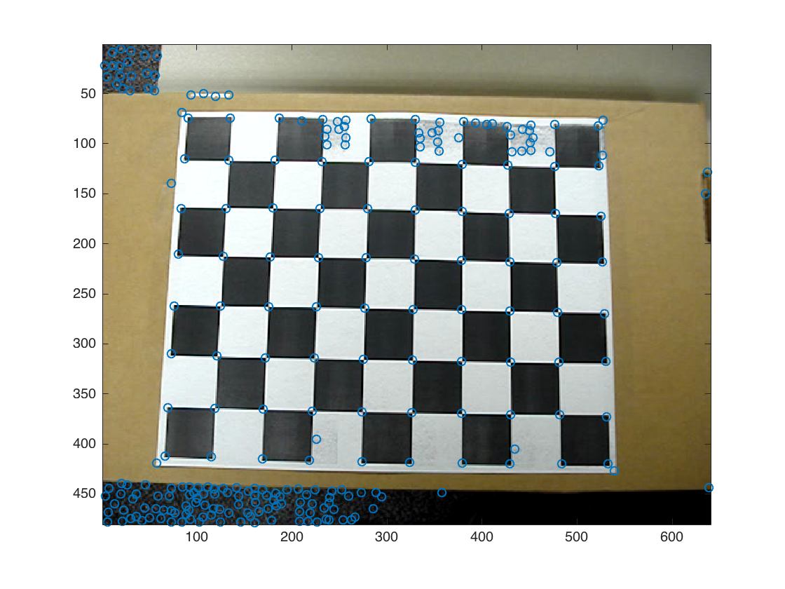
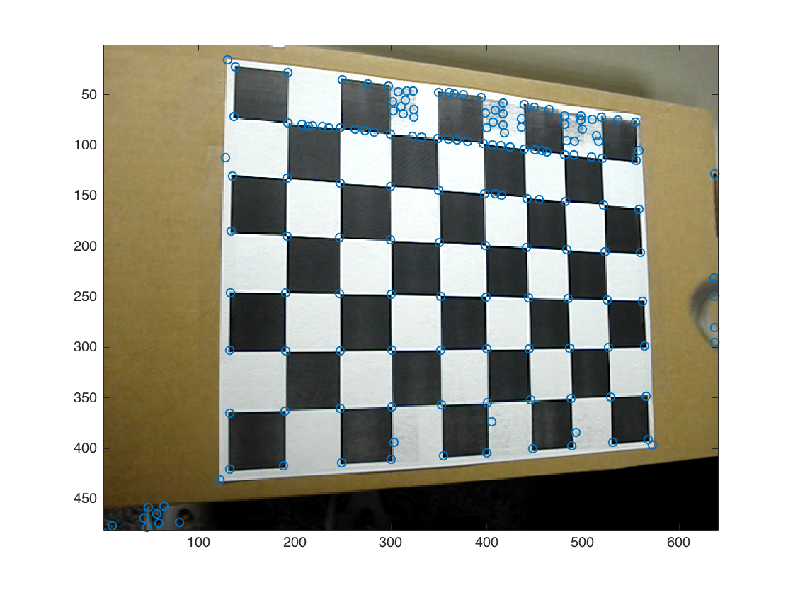
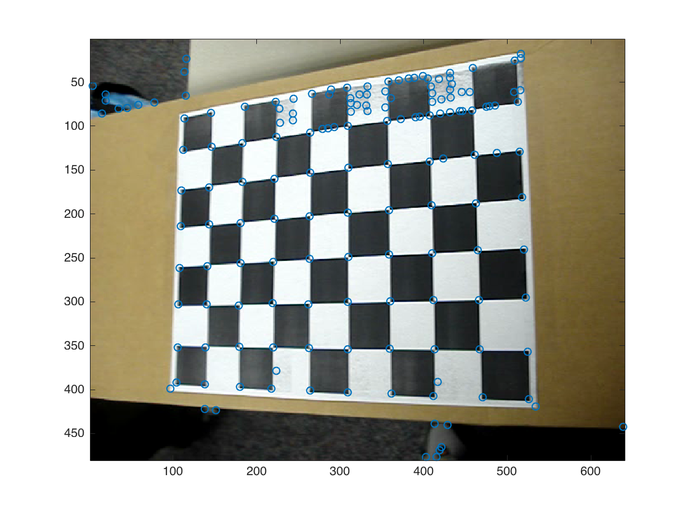
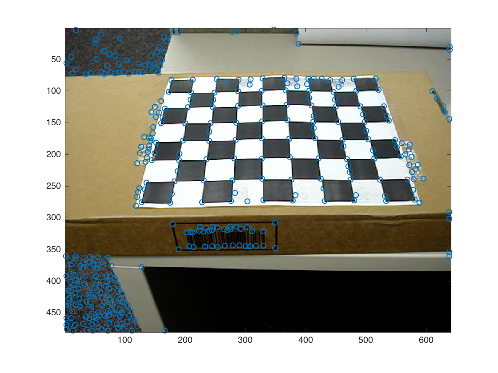
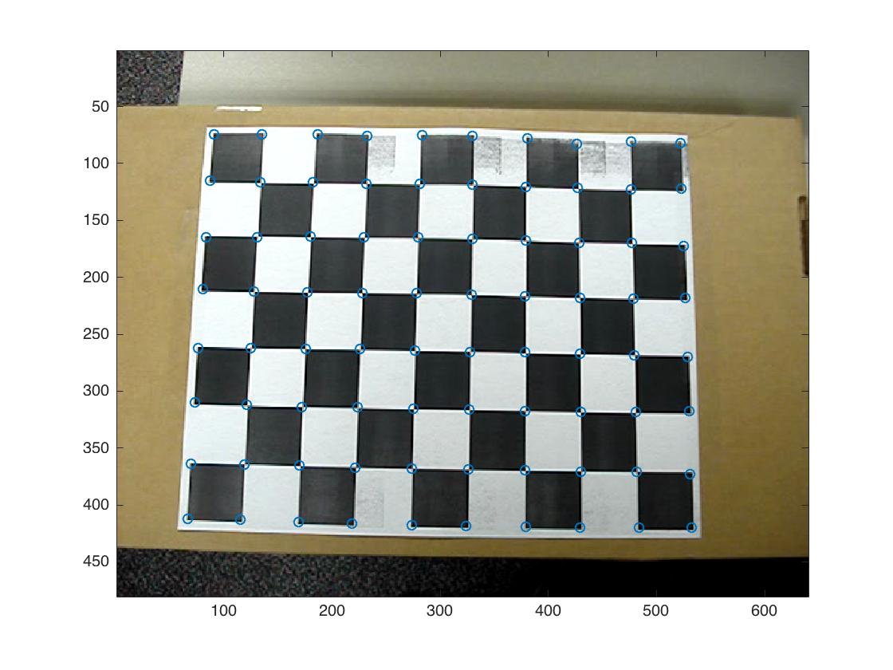
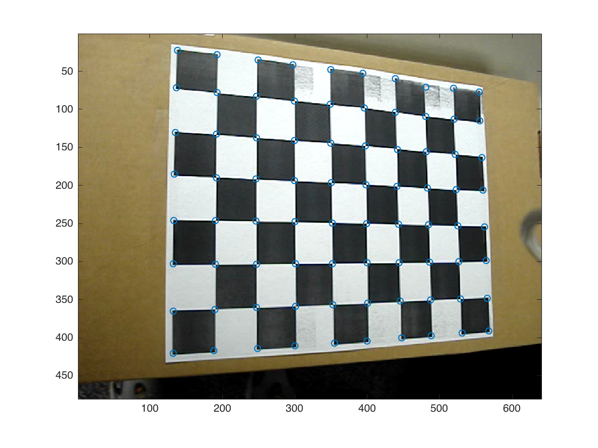
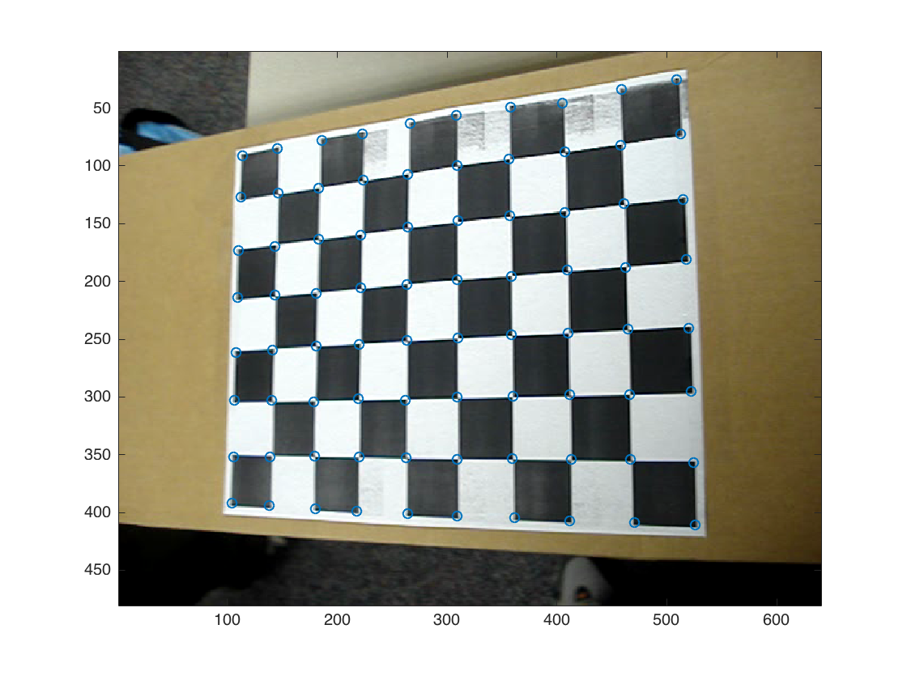
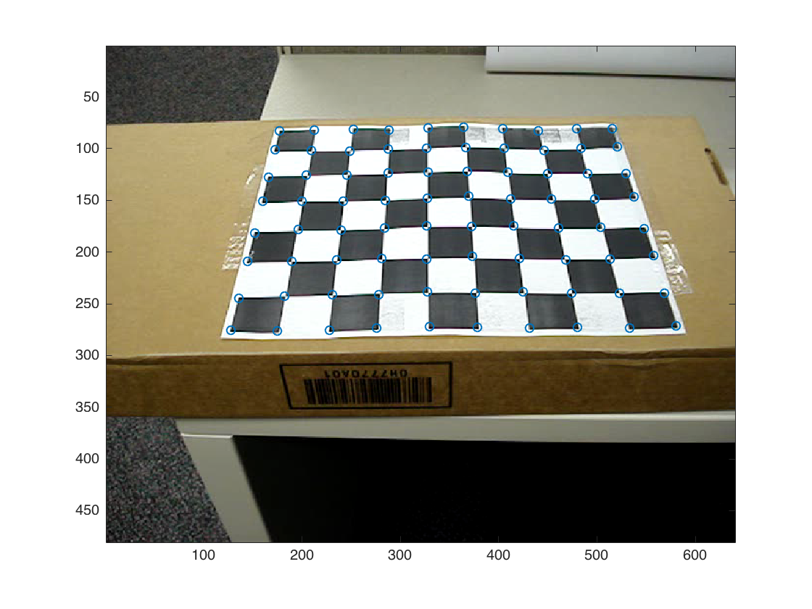

i2 = imread('images2.png');
i9 = imread('images9.png');
i12 = imread('images12.png');
i20 = imread('images20.png');
load imgcord.mat
orgCrdnts = [0, 0, 0.27, 0.27; 0, 0.21, 0.21, 0; 1, 1, 1, 1];
i2Crdnts = [i2_x'; i2_y'; 1, 1, 1, 1];
H2 = homography2d(orgCrdnts, i2Crdnts)
i9Crdnts = [i9_x'; i9_y'; 1, 1, 1, 1];
H9 = homography2d(orgCrdnts, i9Crdnts)
i12Crdnts = [i12_x'; i12_y'; 1, 1, 1, 1];
H12 = homography2d(orgCrdnts, i12Crdnts)
i20Crdnts = [i20_x'; i20_y'; 1, 1, 1, 1];
H20 = homography2d(orgCrdnts, i20Crdnts)
rows_2 = createVrows(H2);
rows_9 = createVrows(H9);
rows_12 = createVrows(H12);
rows_20 = createVrows(H20);
V = [rows_2; rows_9; rows_12; rows_20];
[U_1, S_1, V_1] = svd(V);
b = V_1(:, 6);
B = [b(1), b(2), b(4); b(2), b(3), b(5); b(4), b(5), b(6)]
v0 = (b(2) .* b(4) - b(1) .* b(5)) ./ (b(1) .* b(3) - b(2)^2)
lambda = b(6) - (b(4)^2 + v0 .* (b(2) .* b(4) - b(1) .* b(5))) ./ b(1)
aplha = sqrt(lambda ./ b(1))
beta = sqrt(lambda .* b(1) ./ (b(1) .* b(3) - b(2)^2))
gamma = -b(2) * aplha^2 * beta ./ lambda
u0 = gamma * v0 ./ aplha - b(4) .* aplha^2 ./ lambda
A = [aplha, gamma, u0; 0, beta, v0; 0, 0, 1]
r2_1 = lambda .* inv(A) * H2(:,1);
r2_2 = lambda .* inv(A) * H2(:,2);
r2_3 = cross(r2_1, r2_2);
R2 = [r2_1, r2_2, r2_3]
t2 = lambda .* inv(A) * H2(:,3)
r9_1 = lambda .* inv(A) * H9(:,1);
r9_2 = lambda .* inv(A) * H9(:,2);
r9_3 = cross(r9_1, r9_2);
R9 = [r9_1, r9_2, r9_3]
t9 = lambda .* inv(A) * H9(:,3)
r12_1 = lambda .* inv(A) * H12(:,1);
r12_2 = lambda .* inv(A) * H12(:,2);
r12_3 = cross(r12_1, r12_2);
R12 = [r12_1, r12_2, r12_3]
t12 = lambda .* inv(A) * H12(:,3)
r20_1 = lambda .* inv(A) * H20(:,1);
r20_2 = lambda .* inv(A) * H20(:,2);
r20_3 = cross(r20_1, r20_2);
R20 = [r20_1, r20_2, r20_3]
t20 = lambda .* inv(A) * H20(:,3)
R2 * R2'
[U2, S2, V2] = svd(R2);
newR2 = U2 * V2'
newR2 * newR2'
R9 * R9'
[U9, S9, V9] = svd(R9);
newR9 = U9 * V9'
newR9 * newR9'
R12 * R12'
[U12, S12, V12] = svd(R12);
newR12 = U12 * V12'
newR12 * newR12'
R20 * R20'
[U20, S20, V20] = svd(R20);
newR20 = U20 * V20'
newR20 * newR20'
x = zeros([1,80]);
y = zeros([1,80]);
index = 1;
for i=1:10;
for j=1:8
x(index) = (i - 1) .* 0.03;
y(index) = (j - 1) .* 0.03;
index = index + 1;
end
end
orgGrids = [x; y; ones([1, 80])];
p_approx2 = H2 * orgGrids;
figure
imagesc(i2)
hold on
scatter(p_approx2(1,:) ./ p_approx2(3, :), p_approx2(2,:) ./ p_approx2(3, :));
hold off
figure
p_approx9 = H9 * orgGrids;
imagesc(i9)
hold on
scatter(p_approx9(1,:) ./ p_approx9(3, :), p_approx9(2, :) ./ p_approx9(3, :));
hold off
p_approx12 = H12 * orgGrids;
figure
imagesc(i12)
hold on
scatter(p_approx12(1,:) ./ p_approx12(3, :), p_approx12(2, :) ./ p_approx12(3, :));
hold off
p_approx20 = H20 * orgGrids;
figure
imagesc(i20)
hold on
scatter(p_approx20(1,:) ./ p_approx20(3, :), p_approx20(2, :) ./ p_approx20(3, :));
hold off
[cim2, r2, c2, rsubp2, csubp2] = harris(rgb2gray(i2), 2, 500, 2, 0);
figure
imagesc(i2)
hold on
scatter(csubp2, rsubp2)
hold off
[cim9, r9, c9, rsubp9, csubp9] = harris(rgb2gray(i9), 2, 500, 2, 0);
figure
imagesc(i9)
hold on
scatter(csubp9, rsubp9)
hold off
[cim12, r12, c12, rsubp12, csubp12] = harris(rgb2gray(i12), 2, 500, 2, 0);
figure
imagesc(i12)
hold on
scatter(csubp12, rsubp12)
hold off
[cim20, r20, c20, rsubp20, csubp20] = harris(rgb2gray(i20), 2, 500, 2, 0);
figure
imagesc(i20)
hold on
scatter(csubp20, rsubp20)
hold off
harrisCrdnts2 = [csubp2, rsubp2];
d2 = dist2([(p_approx2(1,:) ./ p_approx2(3, :))', (p_approx2(2,:) ./ p_approx2(3, :))'], harrisCrdnts2);
[sd2, index2] = sort(d2, 2);
p_correct2 = harrisCrdnts2(index2(:, 1), :);
figure
imagesc(i2)
hold on
scatter(p_correct2(:, 1), p_correct2(:, 2));
hold off
harrisCrdnts9 = [csubp9, rsubp9];
d9 = dist2([(p_approx9(1,:) ./ p_approx9(3, :))', (p_approx9(2,:) ./ p_approx9(3, :))'], harrisCrdnts9);
[sd9, index9] = sort(d9, 2);
p_correct9 = harrisCrdnts9(index9(:, 1), :);
figure
imagesc(i9)
hold on
scatter(p_correct9(:, 1), p_correct9(:, 2));
hold off
harrisCrdnts12 = [csubp12, rsubp12];
d12 = dist2([(p_approx12(1,:) ./ p_approx12(3, :))', (p_approx12(2,:) ./ p_approx12(3, :))'], harrisCrdnts12);
[sd12, index12] = sort(d12, 2);
p_correct12 = harrisCrdnts12(index12(:, 1), :);
figure
imagesc(i12)
hold on
scatter(p_correct12(:, 1), p_correct12(:, 2));
hold off
harrisCrdnts20 = [csubp20, rsubp20];
d20 = dist2([(p_approx20(1,:) ./ p_approx20(3, :))', (p_approx20(2,:) ./ p_approx20(3, :))'], harrisCrdnts20);
[sd20, index20] = sort(d20, 2);
p_correct20 = harrisCrdnts20(index20(:, 1), :);
figure
imagesc(i20)
hold on
scatter(p_correct20(:, 1), p_correct20(:, 2));
hold off
H_2_harris = homography2d(orgGrids, [p_correct2'; ones([1, 80])])
H_9_harris = homography2d(orgGrids, [p_correct9'; ones([1, 80])])
H_12_harris = homography2d(orgGrids, [p_correct12'; ones([1, 80])])
H_20_harris = homography2d(orgGrids, [p_correct20'; ones([1, 80])])
[K, R2_ha, R9_ha, R12_ha, R20_ha, t2_ha, t9_ha, t12_ha, t20_ha] = ...
calibration(H_2_harris, H_9_harris, H_12_harris, H_20_harris)
save part2params.mat K R2_ha R9_ha R12_ha R20_ha t2_ha t9_ha t12_ha t20_ha H_2_harris H_9_harris H_12_harris H_20_harris
p_grids2 = H_2_harris * orgGrids;
p_grids2 = [p_grids2(1, :) ./ p_grids2(3, :); p_grids2(2, :) ./ p_grids2(3, :)];
sum(sqrt(sum((p_correct2' - p_grids2) .^ 2))) / 80
p_grids9 = H_9_harris * orgGrids;
p_grids9 = [p_grids9(1, :) ./ p_grids9(3, :); p_grids9(2, :) ./ p_grids9(3, :)];
sum(sqrt(sum((p_correct9' - p_grids9) .^ 2))) / 80
p_grids12 = H_12_harris * orgGrids;
p_grids12 = [p_grids12(1, :) ./ p_grids12(3, :); p_grids12(2, :) ./ p_grids12(3, :)];
sum(sqrt(sum((p_correct12' - p_grids12) .^ 2))) / 80
p_grids20 = H_20_harris * orgGrids;
p_grids20 = [p_grids20(1, :) ./ p_grids20(3, :); p_grids20(2, :) ./ p_grids20(3, :)];
sum(sqrt(sum((p_correct20' - p_grids20) .^ 2))) / 80
H2 =
963.9472 91.8292 36.8101
19.1434 -877.1036 227.7993
0.0045 0.2349 0.5536
H9 =
1.0e+03 *
1.0759 0.0317 0.0659
0.1393 -0.9346 0.2077
0.0005 0.0001 0.0005
H12 =
707.2862 57.2185 64.5904
-175.1755 -883.4433 245.7572
-0.5221 0.1920 0.6249
H20 =
-849.0878 -271.4436 -66.2754
12.9628 402.4780 -142.1929
0.0279 -0.8301 -0.5161
B =
-0.0000 0.0000 0.0005
0.0000 -0.0000 0.0003
0.0005 0.0003 -1.0000
v0 =
231.1021
lambda =
-0.7732
aplha =
731.6835
beta =
718.3872
gamma =
2.6933
u0 =
319.6414
A =
731.6835 2.6933 319.6414
0 718.3872 231.1021
0 0 1.0000
R2 =
-1.0170 -0.0214 0.0070
-0.0195 1.0025 -0.1846
-0.0035 -0.1816 -1.0200
t2 =
0.1485
-0.1075
-0.4281
R9 =
-0.9746 0.0060 0.3885
-0.0304 1.0378 -0.0988
-0.3715 -0.0991 -1.0113
t9 =
0.0983
-0.1001
-0.3838
R12 =
-0.9240 0.0007 -0.4118
0.0587 0.9986 -0.1369
0.4037 -0.1485 -0.9228
t12 =
0.1432
-0.1091
-0.4832
R20 =
0.9067 0.0088 -0.0183
-0.0070 -0.6397 -0.5822
-0.0216 0.6419 -0.5799
t20 =
-0.1044
0.0247
0.3990
ans =
1.0349 -0.0029 0.0003
-0.0029 1.0394 0.0063
0.0003 0.0063 1.0733
newR2 =
-0.9998 -0.0196 0.0068
-0.0205 0.9838 -0.1781
-0.0032 -0.1782 -0.9840
ans =
1.0000 0.0000 -0.0000
0.0000 1.0000 0.0000
-0.0000 0.0000 1.0000
ans =
1.1009 -0.0026 -0.0315
-0.0026 1.0878 0.0084
-0.0315 0.0084 1.1705
newR9 =
-0.9340 0.0055 0.3571
-0.0289 0.9954 -0.0909
-0.3560 -0.0952 -0.9296
ans =
1.0000 -0.0000 0
-0.0000 1.0000 0.0000
0 0.0000 1.0000
ans =
1.0234 0.0029 0.0069
0.0029 1.0194 0.0017
0.0069 0.0017 1.0365
newR12 =
-0.9148 -0.0002 -0.4039
0.0591 0.9892 -0.1342
0.3995 -0.1467 -0.9049
ans =
1.0000 0.0000 -0.0000
0.0000 1.0000 -0.0000
-0.0000 -0.0000 1.0000
ans =
0.8225 -0.0013 -0.0033
-0.0013 0.7482 -0.0728
-0.0033 -0.0728 0.7488
newR20 =
0.9997 0.0105 -0.0223
-0.0083 -0.7059 -0.7083
-0.0232 0.7083 -0.7056
ans =
1.0000 -0.0000 0.0000
-0.0000 1.0000 -0.0000
0.0000 -0.0000 1.0000
H_2_harris =
-969.9187 -87.2957 -35.2790
-17.5828 891.3779 -230.2638
-0.0019 -0.2216 -0.5556
H_9_harris =
1.0e+03 *
-1.1014 -0.0357 -0.0632
-0.1500 0.9475 -0.2083
-0.0005 -0.0001 -0.0005
H_12_harris =
713.3369 51.6519 63.8469
-178.1668 -902.1302 248.9692
-0.5375 0.1736 0.6310
H_20_harris =
851.9828 267.1637 63.4635
-7.1952 -401.3283 139.6280
0.0040 0.8232 0.5039
K =
721.3977 -0.6624 327.5222
0 707.9265 234.6418
0 0 1.0000
R2_ha =
1.0208 0.0146 0.0045
0.0184 -1.0124 -0.1719
0.0014 0.1684 -1.0338
R9_ha =
0.9772 -0.0099 0.4258
0.0276 -1.0507 -0.1041
0.4025 0.1024 -1.0265
R12_ha =
-0.9366 0.0064 -0.4206
0.0558 1.0118 -0.1209
0.4084 -0.1319 -0.9481
R20_ha =
-0.8959 0.0032 -0.0035
0.0087 0.6380 -0.5603
-0.0030 -0.6254 -0.5716
t2_ha =
-0.1544
0.1072
0.4221
t9_ha =
-0.1027
0.1000
0.3729
t12_ha =
0.1503
-0.1083
-0.4794
t20_ha =
0.1069
-0.0230
-0.3828
ans =
1.7997
ans =
1.8648
ans =
2.0807
ans =
1.6978
       